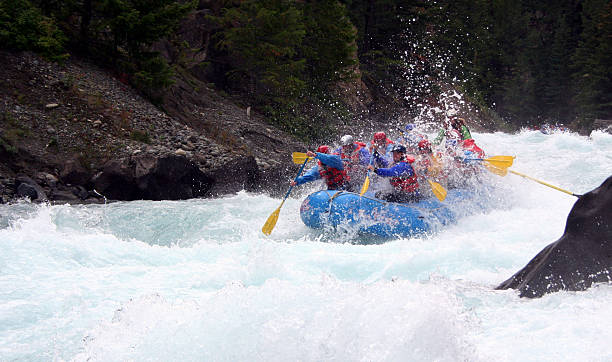

One of most thrilling adventures you can embark on in this beautiful state is white water rafting.Adrenaline pumping through your veins as you crash the rapids.

Exciting Expeditions
History

The origins of whitewater rafting trace back to the mid-!8th century when rubber rafts were first used by the millitary expeditions to navigate uncharted waters.
Whitewater forms in the context of rapids, in particular, when a river's gradient changes enough to generate so much turbulence that air is trapped within the water.
Adventure awaits you!